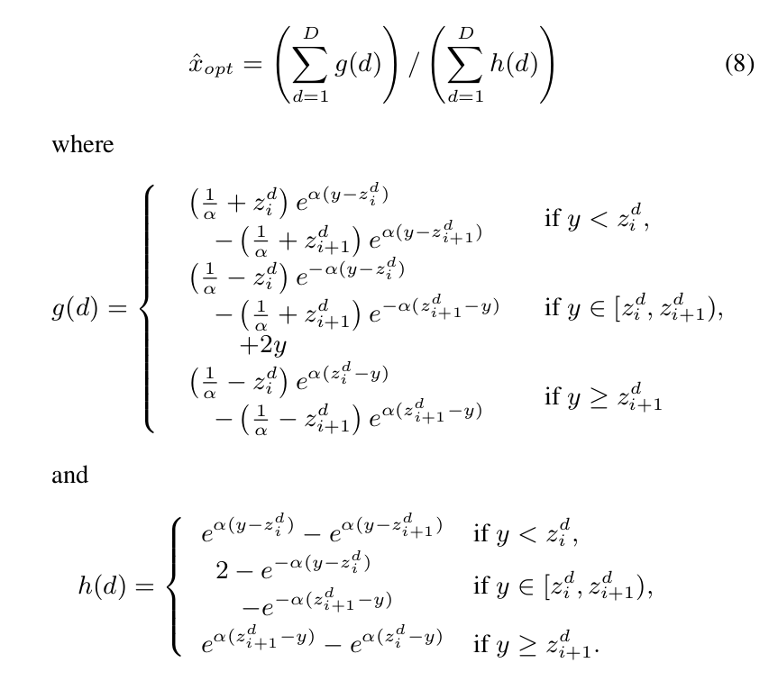

Olivier Crave
About Me
Hi and welcome, I am Olivier Crave, software engineer within the simulator team at Parrot. My main focus area is drone simulation: pushing for visually and physically realistic simulations, and improved developer experience.

Parrot Sphinx is a state-of-the-art drone simulation tool. Parrot engineers use it to develop and test all the current and upcoming features of Parrot drone platforms. It relies on industry-standard components (Gazebo and Unreal Engine) for photorealistic render and accurate physics-based simulation. Check it out here
Current Interests
- Computer Graphics: to create visually accurate environments.
- Simulations: to provide a robust platform that accelerate research and development.
- Robotics: by enabling teams to develop and validate advanced drone capabilities and perform automated testing.
- Embedded systems: to develop embedded software tightly integrated with sensors and actuators.
Projects
-
C++
-
C
-
 JavaScript
Several bad guys fall from the top of the screen, and you must avoid them.
JavaScript
Several bad guys fall from the top of the screen, and you must avoid them. -
JavaScript
-
C++
-
 JavaScript
Flip over two cards. If they match, then they stay overturned.
JavaScript
Flip over two cards. If they match, then they stay overturned. -
C++
Publications
-
TCSVTIn IEEE Transactions on Circuits and Systems for Video Technology (TCSVT), Mar 15, 2010
-
EURASIPIn EURASIP Journal on Advances in Signal Processing, Jun 14, 2009
-
 ICASSPIn IEEE ICASSP, 34th International Conference on Acoustics, Speech, and Signal Processing, Taipei, Taiwan, Apr 19-24, 2009
-
In IS&T/SPIE Electronic Imaging, Jan 18, 2009
-
-
 EUSIPCO
In EUSIPCO 2008, 16th European Signal Processing Conference, Lausanne, Switzerland, Aug 25-29, 2008
EUSIPCO
In EUSIPCO 2008, 16th European Signal Processing Conference, Lausanne, Switzerland, Aug 25-29, 2008 -
EUSIPCOIn EUSIPCO 2007, 15th European Signal Processing Conference, Poznan, Poland, Sep 3-7, 2007
-
EUSIPCOIn EUSIPCO 2007, 15th European Signal Processing Conference, Poznan, Poland, Sep 3-7, 2007
-
EURASIPIn EURASIP Journal on Wireless Communications and Networking, Special Issue on Multimedia over Wireless Networks, Jul 2, 2007
-
EUSIPCOIn EUSIPCO 2006, 14th European Signal Processing Conference, Florence, Italy, Sep 4-8, 2006
-
In Proc. SPIE Vol. 5748, pp. 162-170, Medical Imaging 2005: PACS and Imaging Informatics, San Diego, Apr 2005
-
In CARS 2004, 18th Computer Assisted Radiology and Surgery International Congress and Exhibition, Chicago, 2004
-
 In RSNA 2004, 90th Scientific Assembly and Annual Meeting of the Radiological Society of North America, Chicago, 2004
In RSNA 2004, 90th Scientific Assembly and Annual Meeting of the Radiological Society of North America, Chicago, 2004 -
In RSNA 2004, 90th Scientific Assembly and Annual Meeting of the Radiological Society of North America, Chicago, 2004
Education
-
PhD in Computer Science, 2008
INRIA Rennes / Telecom ParisTech
-
MSc in Mathematics, Vision, Learning, 2005
Ecole Normale Supérieure de Cachan
-
MSc in Computer Engineering, 2004
Université de Technologie de Compiègne
Experience
-
Software Engineer R&D - Drone
Mar 2015 – Present
Paris
-
Software Engineer R&D - Multimedia
Mar 2011 – Feb 2015
Paris
-
Software Engineer R&D - Computer Vision
Oct 2009 – Apr 2011
Saclay
-
Ph.D. Candidate
Oct 2005 – Dec 2008
Rennes
-
Research Intern
Apr 2005 – Sep 2005
Paris
-
Engineer Intern
Jul 2003 – Jul 2004
Princeton